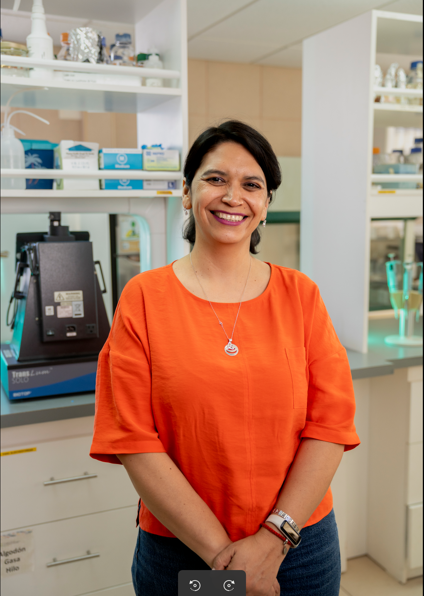
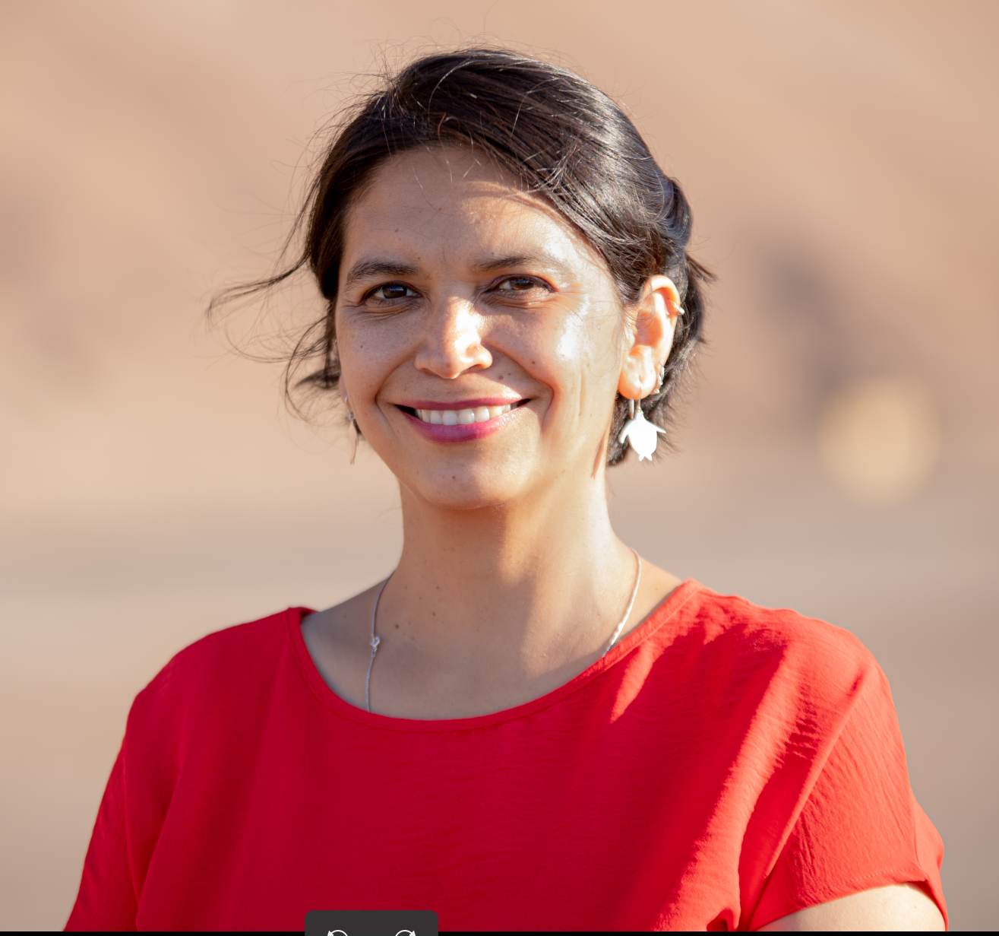
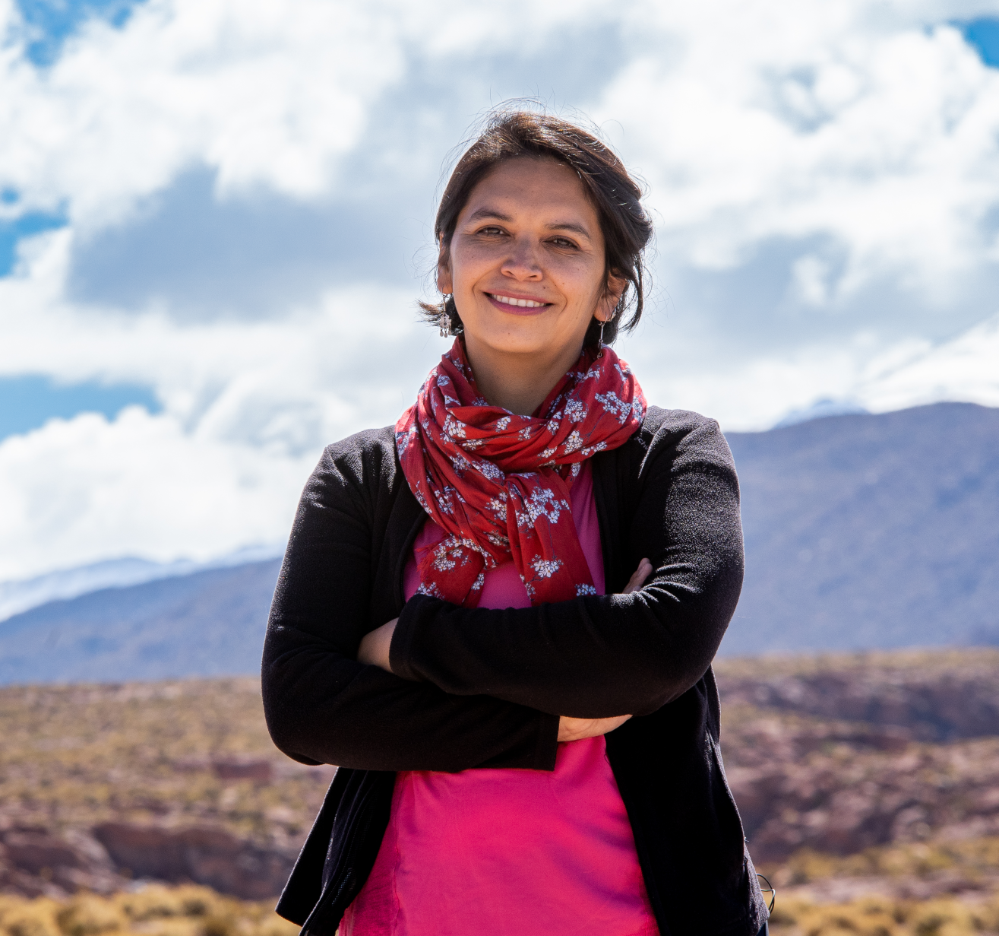
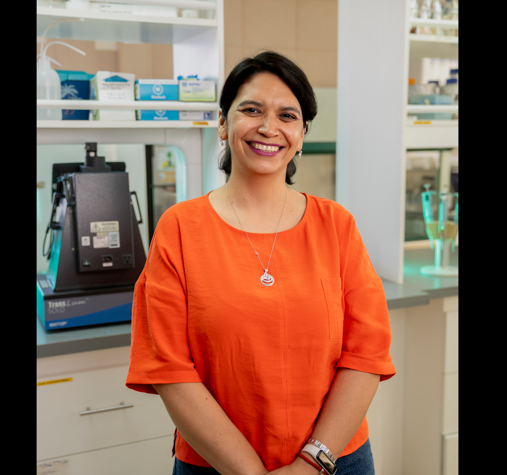

FECHA
TITULO
DESCRIPCION
Investigadora y académica con sólida experiencia en microbiología de ambientes extremos, coordinación académica y comunicación institucional.
Especialista en liderazgo de proyectos de investigación en I+D+i y en el cierre de brechas de género.



Académica universitaria con más de 20 años de experiencia en investigación en áreas de Biotecnología, Microbiología, Ecología Microbiana, Geomicrobiología, ambientes extremos, Astrobiología y temas inter y transdisciplinarios. He dirigido tesis de pre y postgrado y liderado iniciativas intra e interuniversidades como la Red de Ambientes Extremos (NEXER). He dirigido proyectos de investigación nacionales e internacionales de ciencia aplicada y fundamental y publicado más de 80 artículos científicos.
He sido asesora científica y participado de múltiples instancias de divulgación y de equidad de género en la investigación. He sido miembro del Consejo de CONICYT, del International Board de la Sociedad Internacional de Ecología Microbiana (ISME) y fui electa Convencional Constituyente por la región de Antofagasta. He sido becaria de los programas IVLP, TIES (Estados Unidos) y DAAD (Alemania). Soy investigadora titular del Centro de Biotecnología y Bioingeniería (CeBiB) e investigadora asociada del Centro de Astrofísica y Tecnologías Afines (CATA). He contribuido a la elaboración de políticas públicas como la Red de Salares Protegidos y creación de nuevas áreas protegidas, Estrategia Nacional del Litio (2025) y he participado como experta en biodiversidad de salares convocada por el Consejo de Defensa del Estado.
Universität zu Kiel, Kiel, Alemania
Obtención del grado de Doctor en Ciencias Naturales (Dr. Rer. Nat.) con mención en Microbiología. Tesis: " Microbial communities in high altitude altiplanic wetlands in northern Chile: phylogeny, diversity and function" Nota: magna cum laude.
Max Planck Institut für Limnologie en Plön y en el Leibniz-Institut für Meereswissenschaften (IFM-GEOMAR)
Kiel, Alemania
Facultad de Ciencias.
Universidad de Chile, Santiago, Chile.
Universidad de Chile.
Mención en Biología.
Acá tienen detalles de algunas de mis experiencias laborales
Universidad de Antofagasta, Antofagasta, Chile
2008 - 2026Cargo académico en el Departamento de Biotecnología de la Facultad de Ciencias del Mar y Recursos Naturales, Universidad de Antofagasta.
University of Strathclyde, Reino Unido
2025Honorary Research fellow, Departamento de Ingeniería Civil y Medioambiente, University of Strathclyde, Glasgow, Reino Unido.
Convención Constitucional de Chile
2021 - 2022Participé como Convencional Constituyente en la redacción de la nueva propuesta constitucional para Chile, impulsando discusiones vinculadas a ciencia, medioambiente, descentralización y protección de los ecosistemas.
Nacional e Internacional
2019 - 2026Participación en comités, paneles y organismos científicos nacionales e internacionales vinculados a microbiología, políticas públicas, género, sustentabilidad y ciencia para la toma de decisiones.
Experiencia interdisciplinaria en ecología microbiana, investigación en ambientes extremos, liderazgo científico y vinculación entre ciencia, territorio y políticas públicas.
Investigación en biodiversidad microbiana y ecosistemas extremos del Desierto de Atacama.
Dirección y participación en iniciativas científicas nacionales e internacionales.
Comunicación pública de la ciencia promoción del conocimiento científico en distintos espacios educativos y sociales.
Participación en paneles asesores, comisiones estratégicas y procesos de toma de decisiones.
Trabajo interdisciplinario enfocado en sustentabilidad, descentralización y protección de ecosistemas.
Selección de imágenes destacadas de mi trayectoria.